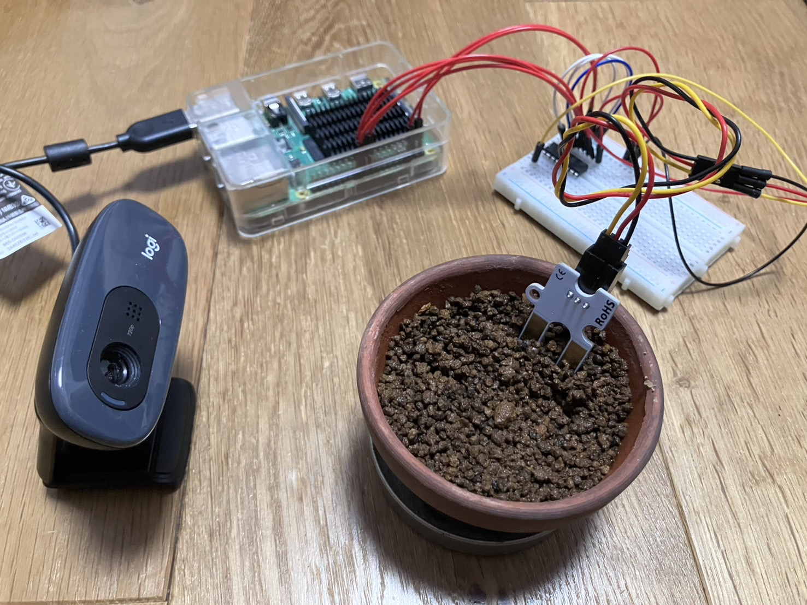

この作品について
この作品は大学二年の一学期に学んだIoTシステム開発の最終発表の作品だ。課題の内容はLinux演習や基礎実装で学んだことをベースに自分の発想で、センサ、アクチュエータを組み合わせてIO制御プログラムを実行し、デジタル入出力、SPI、I2C、PWM制御などの活用・組み合わせて自由な発想で独自システムを開発することだ
使用技術
- HTML
- Python
工夫した点・学んだ点
この作品を作ったきっかけは、日常生活が忙しく日常生活が忙しく観葉植物の水やりを忘れがちだったり、水やりしすぎで根腐れさせてしまったりと、植物の管理は難しい。また、旅行などで家を空ける時間もしんぱいである可能性などが課題だと考えた。このシステムを利用することで、植物を育てている人がスマートフォンでいつでも植物の状態と土の渇き具合を確認できる。これにより、水やりのタイミングを逃さず、手軽に植物を健康に育てることができると考えた。工夫した点は三点ある。カメラで写真を撮ることにより、植物の成長を日記形式で観察することができる。土壌水分センサの数値をグラフ化し見える化する。水やりが必要なタイミングが来たら通知を送る機能など。学んだ点はPythonでセンサやカメラといったハードウェアを制御し、データをCSVファイルに記録・保存する方法、Discordのような外部Webサービスと連携する方法などを学んだ。